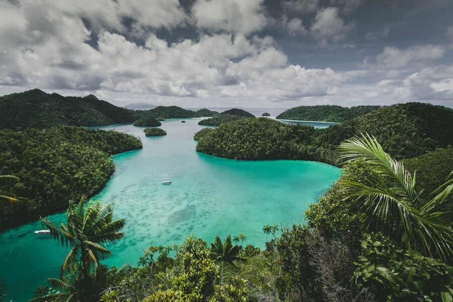
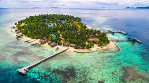
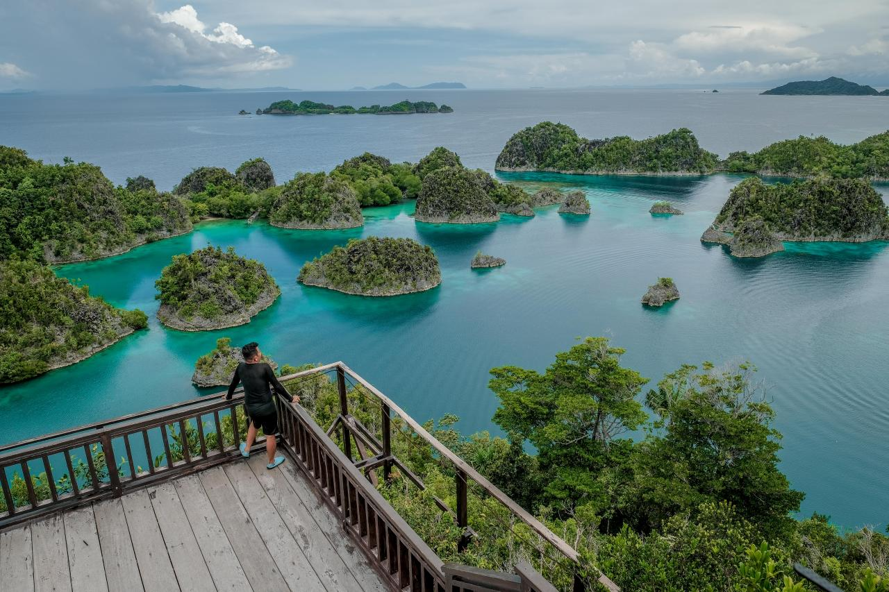

Jelajahi Raja Ampat
Raja Ampat, yang terletak di Papua Barat, adalah surga bagi para penyelam dan pecinta alam bawah laut. Kepulauan ini terkenal dengan keanekaragaman hayati lautnya yang luar biasa, terumbu karang yang indah, dan pemandangan pulau-pulau karst yang menakjubkan.
Tempat Wisata Populer

Pulau Wayag
Terkenal dengan pemandangan gugusan pulau karst yang menakjubkan dan air laut yang jernih.

Desa Arborek
Desa wisata yang menawarkan pengalaman budaya dan menyelam yang luar biasa.

Pianemo
Dikenal sebagai Mini Wayag, menawarkan pemandangan indah dari atas bukit.
Budaya Raja Ampat
Masyarakat Raja Ampat memiliki budaya yang kaya dan beragam. Wisatawan dapat menyaksikan tarian tradisional, mengenal kehidupan sehari-hari masyarakat setempat, dan menikmati kuliner khas Papua Barat.